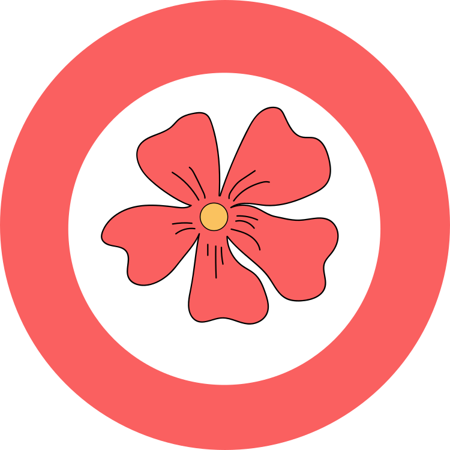
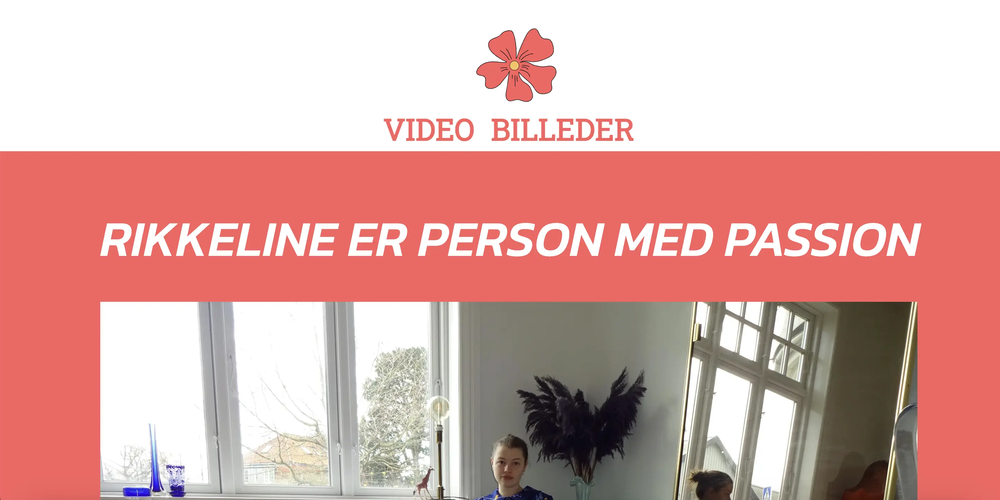
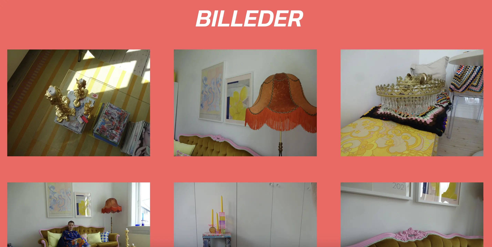

VIDEOSITE // PERSON MED PASSION
I femte tema, grundlæggende indhold, videoproduktion lærte vi både forberedelse til optagelserne,
hvordan man bedst
muligt sikrer sig godt indhold under optagelserne og post-produktionen af optagelserne.
Derudover blev vi udfordret med programmet Premiere pro.
Vi skulle to-og-to filme en person, der har en passion. Catalina og jeg valgte at lave en video med
hendes søster
Rikkeline, og hendes passion for genbrug og møbler. Vi blev enige om et retrolook til videoen, og
valgte derfor at filme
på et digitalt kamera.
Under optagelserne havde vi fokus på at filme en masse indhold, så vi havde mange muligheder for
b-rolls.
Da jeg klippede videoen, havde jeg fokus på udvælgelse af klip, samt colorgrading på alle valgte
klip. Jeg valgte ikke
at lave underlæggende musik for at bibeholde det retro tema.
På min pilot-side, valgte jeg et farverigt tema, som jeg føler passer til Rikkeline og hendes
passion. Hertil lavede jeg
titlen "RIKKELINE ER PERSON MED PASSION" samt et simpelt og livligt logo. Jeg indsatte videoen samt
udvalgte billeder.

